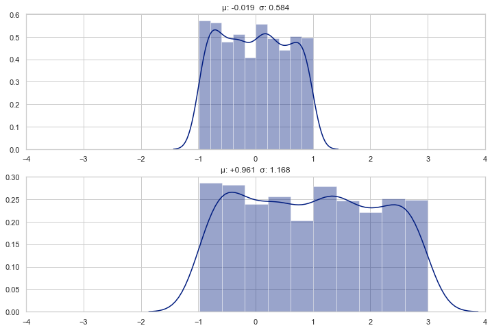

Why is initialization important in neural networks?
neural-network
Published
June 25, 2020
Today, when we build a deep neural network with standard layers and activation functions, we don’t worry much about the initialization of network’s parameters. But, this wasn’t always so. Exploding/vanishing gradients and numerical instability issues were likely if you were not careful about initialization. We hardly encounter such problems nowadays, partly because ReLU has become de-facto non-linearity choice and modern neural network frameworks use the right initialization schemes under the hood. But, why is initialization important at all?
We can consider a neural network as a collection learnable parameters that are initialized randomly and updated with gradient descent. In theory, this must find the optimal parameters, no matter the initial values. However, since the floating point representations used in computers have a finite range and precision, picking wrong initial values may cause out-of-range numerical values and cripple training process.
OK, how about constraining all the initial values to a specific range, such as [-1, 1] or [-0.1, 0.1]? Would it solve the problem? Unfortunately, it may not. In modern deep neural networks, the input goes through many layers, each changing incoming data in a specific way. Therefore, the changes accumulate through the network and eventually may cause the values to grow too large or too small. To solve this problem for all networks with an arbitrary number of layers, we use proven initialization schemes that keep the variance of data and gradients unchanged through the neural network as much as possible.
How does the properties of a distribution changes through various transformations?
Code
%matplotlib inlineimport matplotlib.pyplot as pltimport seaborn# Set seaborn aesthetic parameters to defaultsseaborn.set()seaborn.set_style('whitegrid')seaborn.set_palette("dark")import numpy as npimport torchnp.random.seed(42)def plot_distributions(*arrays, bins=None, fig_width=12, fig_height=4, xlim=None): n =len(arrays) fig = plt.figure(figsize=(fig_width, fig_height*n))for i, x inenumerate(arrays): ax = fig.add_subplot(n, 1, i+1) seaborn.distplot(x, bins=bins) ax.set_title(stats_desc(x)) ax.set_xlim(xlim)
y = np.random.uniform(0, 10, n)z = x + yprint(f"Added a uniform dist. {stats_desc(y)}")plot_distributions(x, y, xlim=(-2, 15), fig_width=12)
Added a uniform dist. μ: +5.070 σ: 2.920
Scale and shift
y =2* x +1plot_distributions(x, y, xlim=(-4, 4))

Affine transformation
A linear layer (or fully connected layer) with weights, \(W \sim U[-c, c]\) , approximately transforms a uniform distribution \(x \sim U[-1, 1]\) to a normal distribution \(y \sim \mathcal N(\mu, \sigma)\)